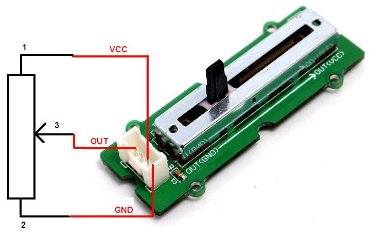
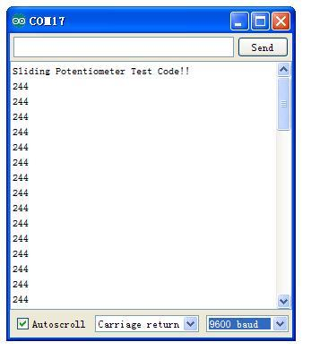
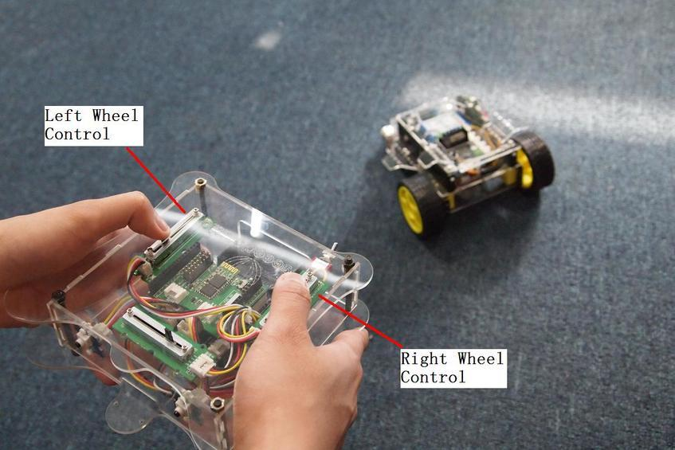
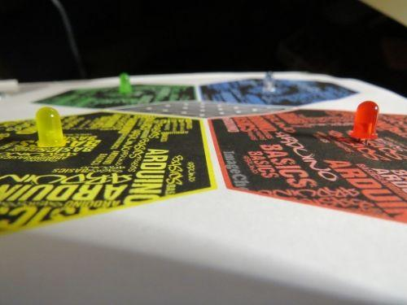

The Grove - Slide Potentiometer module incorporates a linear variable resistor with a maximum resistance of 10KΩ. When you move the slider from one side to the other, its output voltage will range from 0 V to the Vcc you apply. It connects to the other Grove modules through a standard 4-Pin Grove Cable. Three of the pins are connected to OUT (Pin 1), Vcc (Pin 3) and GND (Pin 4), while the fourth pin (Pin 2) is connected to a on-board green indicator LED. The LED is used to visually represent the resistance change on the potentiometer.

<end>
| Item | Min | Typical | Max |
|---|---|---|---|
| Voltage (DC) | 3.3V | 5.0V | 30V |
| Current | - | - | 30mA |
| Dimension | 24mm x60mm | ||
| Net Weight | 8.6g | ||
| Rotational life | >15,000 cycles | ||
| Total resistance | 10KΩ | ||
| Stroke length | 30mm | ||
| Total resistance tolerance | +/- 20% | ||
As shown below, the Grove - Slide Potentiometer can be used as a simple slide potentiometer in any MCU controlled or stand-alone project.

Follow these steps to build a sample Grove circuit using this module but without using any microcontroller board:
In terms of choosing a power module, you can use either the Grove - USB Power module or the Grove - DC Jack Power module for building standalone Grove circuits.
Follow these simple steps to make the slide potentiometer module function as a voltage divider:
int adcPin = A0; // select the input pin for the potentiometer int ledPin = A1; // select the pin for the LED int adcIn = 0; // variable to store the value coming from the sensor void setup() { Serial.begin(9600); // init serial to 9600b/s pinMode(ledPin, OUTPUT); // set ledPin to OUTPUT Serial.println("Sliding Potentiometer Test Code!!"); } void loop() { // read the value from the sensor: adcIn = analogRead(adcPin); if(adcIn >= 500) digitalWrite(ledPin,HIGH); // if adc in > 500, led light else digitalWrite(ledPin, LOW); Serial.println(adcIn); delay(100); }

Slide Potentiometer can be an effective Human Interface Device (HID) and can be used, for example, in the radio controller of a Radio Controlled toy car. The picture below shows two Slide Potentiometers on the control panel - one to control the speed of the left wheel, and the other to control the speed of the right wheel of the toy car respectively. Now you can change the speeds of both motors and see the behavior. You will see that if you make the right wheel spin faster than the left wheel, the car will turn rightwards, and if you make the left wheel spin faster than the right wheel, the car will turn leftwards.

1.You should have got a raspberry pi and a grovepi or grovepi+.
2.You should have completed configuring the development enviroment, otherwise follow here.
3.Connection
4.Navigate to the demos' directory:
cd yourpath/GrovePi/Software/Python/
nano grove_slide_potentiometer.py # "Ctrl+x" to exit #
import time
import grovepi
# Connect the Grove Slide Potentiometer to analog port A0
# OUT,LED,VCC,GND
slide = 0 # pin 1 (yellow wire)
# The device has an onboard LED accessible as pin 2 on port A0
# OUT,LED,VCC,GND
led = 1 # pin 2 (white wire)
grovepi.pinMode(slide,"INPUT")
grovepi.pinMode(led,"OUTPUT")
time.sleep(1)
while True:
try:
# Read sensor value from potentiometer
sensor_value = grovepi.analogRead(slide)
# Illuminate onboard LED
if sensor_value > 500:
grovepi.digitalWrite(led,1)
else:
grovepi.digitalWrite(led,0)
print "sensor_value =", sensor_value
except IOError:
print "Error"
5.Run the demo.
sudo python grove_slide_potentiometer.py
The best way to learn something, is to create a project with it.
Recipe Community is a place which gathers a lot of amazing projects with step-by-step tutorials. Makers in the community have made a lot of awesome projects with the Grove - Slide Potentiometer, check this out!
Take an ordinary shoebox and convert it into an Arduino Boombox! DIY your own MP3 player with Arduino Uno and our Grove components. The Grove - Slide Potentiometer is used for the volume control in this project.

I've got to say that, our maker ArduinoBasics in the Recipe community, this guys must be born with a musical turn of mind, after the Arduino BoomBox, once again he made this Arduino BeatBox with some basic Grove components, which really impressed us.
Find out even more awesome projects on Recipe.
This Grove module is available as part of the following Grove Kit Series:
Alternatively, it can be bought stand-alone here at the Seeed Studio Bazaar.
Copyright (c) 2008-2016 Seeed Development Limited (www.seeedstudio.com / www.seeed.cc)